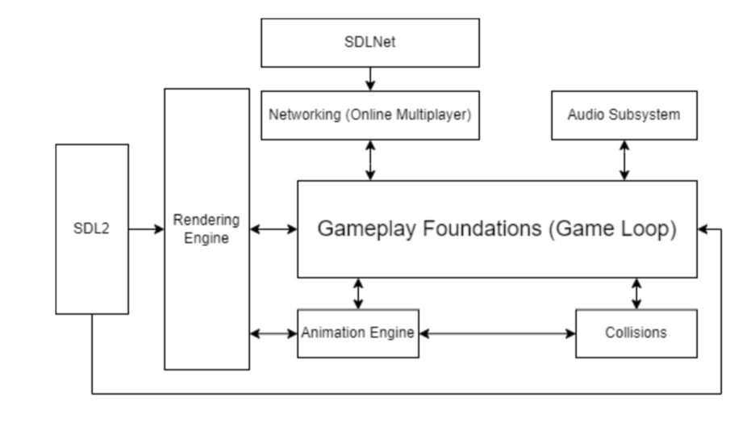
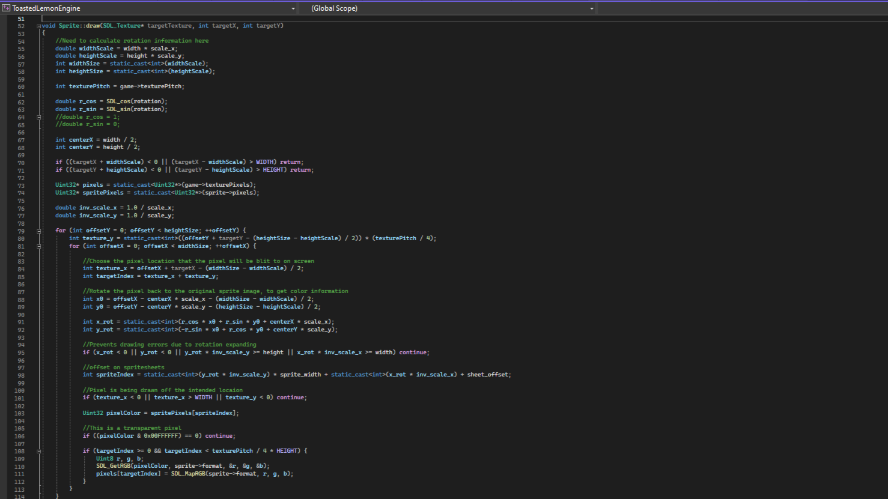
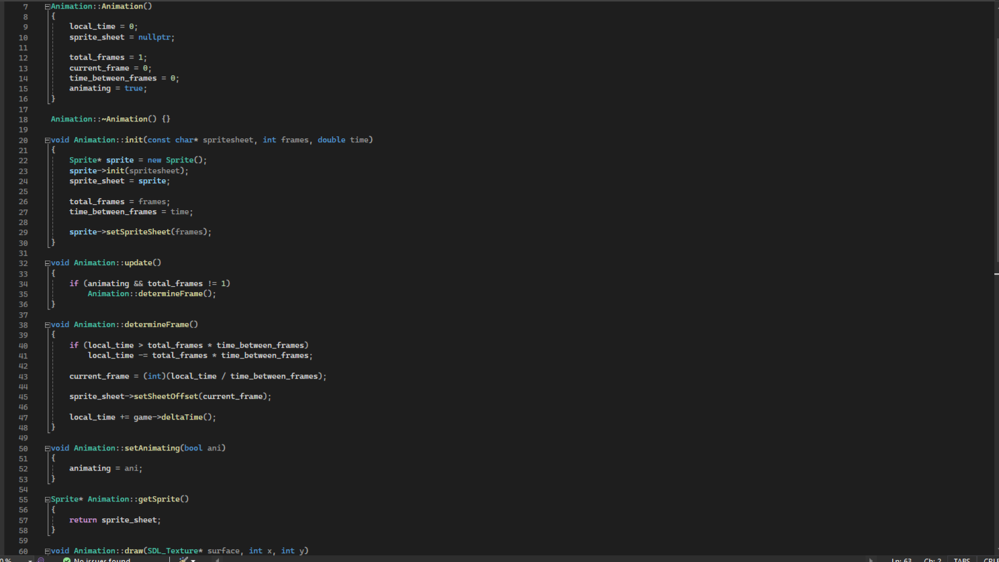

Toasted Lemon Engine
Game EngineCreated using C++ and SDL2
What is Toasted Lemon Engine?
Toasted Lemon Engine is a retro-inspired 2D game engine created in C++ utilizing the SDL2 library. During this 3-month project I worked with two other programmers who helped me refine this game engine.My role in the game engine was to create the rendering engine, animation engine, sprite mapping tools, sprite atlassing tools, and scripting with game objects. I also helped a lot to get the networking engine working with out engine. I am happy with how our engine turned out and hope to work with 3D graphics in the future!
DEMO
Diagram & Code

Diagram of Engine

Engine Main Game Loop

Rendering Engine Drawing to Buffer

Animation Engine